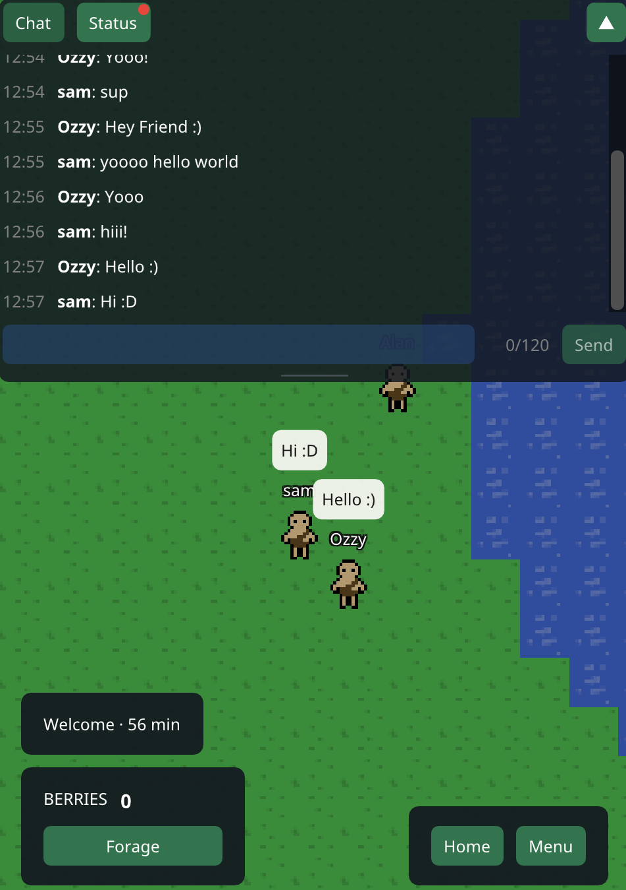

Newest update · 0.6 · 2026-10-30
Live chat has arrived!
- You can now chat with other players, and we made a status log!
- Names over every character, and a UI Settings window to resize the screen
- We are looking for asset and ui artists to start a new system i'm developing :)
Get the game
Project Utopia is invite only for now. Testers get the Android app through Firebase App Distribution and the Windows version through itch.io, and one account works on both. Want to play? Ask on Discord.
Support the game
Not sustainable yet
Donations just opened. Thank you for helping keep the server running!
Project Utopia is free, and donating buys nothing in the game. Donations help pay what it costs to run each month:
| The server | $4 |
| Development tools | $20 |
| Each month | $24 |
And once, to put the game on Steam and Google Play:
| Steam publishing fee | $100 |
| Google Play developer fee | $25 |
| Ko-fi goal (the fees and a month) | $150 |
The bar on Ko-fi shows how much of the $150 goal is covered.
Every update
- 0.6 Live chat has arrived! 2026-10-30
- 0.5 Smooth walking 2026-10-28
- 0.4 One game on phone and PC 2026-10-26
- 0.3 Project Utopia on PC 2026-10-24
- 0.2 Email accounts, names and patch notes 2026-10-23